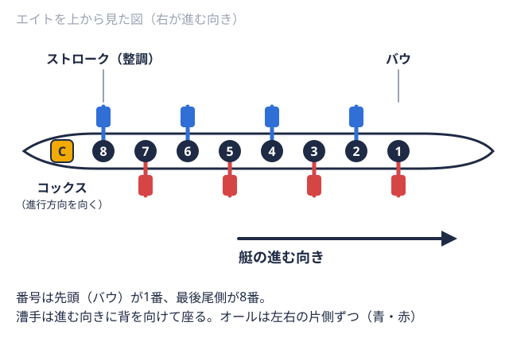

進路・入門 2026-11-27
大学ボート部のセレクション・スポーツ推薦とは？出願条件と選考の流れを要項で確認
高校でボートを続けてきた人や、その保護者が「大学のボート部にはセレクションがあるのか」「スポーツ推薦で入れるのか」と調べ始めると、情報が大学ごとにばらばらで、いつの話なのか分かりにくいことに気づきます。大学ボート部には、一般入試で入学してから入部する道と、競技実績を使って推薦・総合型選抜などで入学する道があり、「セレクション」という言葉も入試制度とは別の意味で使われる場合があります。
この記事では、大学が公開している要項やボート部の公開案内を一次資料として、ボート競技での推薦・選抜の仕組みを整理します。大学ごとの条件は年度で変わるため、どの年度の資料に基づく内容かを明記しました。実際に出願を考える場合は、必ず志望校の最新の要項で確認してください。
結論：入口は大きく3つ、セレクションは入試と別に考える
調べた範囲で整理すると、大学ボート部への入り方は次の3つに分けて考えると混乱しにくくなります。
| 入口 | 主な特徴 | 本記事で確認した例 |
|---|---|---|
| 一般入試などで入学し、入部する | 入学後に入部の意思を伝える形。大学から競技を始める部員が中心の部もある | 青山学院大学ボート部ブログ、早稲田大学漕艇部の新入部員募集 |
| スポーツ推薦・総合型選抜（競技実績が条件） | 全国大会などの実績、評定平均、小論文・面接などが組み合わさる | 中央大学（2027年度）、青山学院大学（2024年度入学向け） |
| 体育系大学の学校推薦型選抜（実技検査あり） | ローイングが強化種目に指定され、エルゴ陸の上で漕ぐ動作を再現するトレーニング機器。タイムの計測にも使う。などの実技検査が課される | 鹿屋体育大学（令和8年度・令和9年度） |
「セレクション」は、ボート部が高校生向けに行う体験・選考の場を指して使われることがあります。後述する中央大学ボート部の過去の案内では、セレクション自体は入学の合否を決めるものではないと書かれていました。つまり、セレクションと入試は別のもので、合否はあくまで大学の入学試験で決まる、という整理が基本になります。
前提：大学ボート部は未経験入部が中心の部も多い
推薦の話に入る前に、大学ボート部の入部者像を確認しておきます。青山学院大学ボート部のブログ（2023年9月掲載）は、部員は高校までの経験者がいない未経験者が中心だと説明しています。早稲田大学漕艇部も、2024年度の新入部員募集で、ボートは「大学から始めて活躍できるスポーツ」と案内しています（競技スポーツセンター掲載の募集記事）。
したがって、「推薦で入っていない人はついていけない」と考える必要はありません。未経験から始める流れは大学からボート部は始められる？で、入部前の体験の流れは大学ボート部の体験入部はどんな流れ？で扱っています。この記事は、すでに高校で競技実績がある人が「その実績を入試でどう使えるか」を知るための整理です。
例1：中央大学の2027年度スポーツ推薦入学試験
中央大学の「2027年度 スポーツ推薦入学試験要項」には、募集競技種目に「ローイング、ボート」が掲載されています。要項はこの入試を、文部科学省の入学者選抜実施要項でいう「総合型選抜」として実施するものと位置づけています（中央大学 2027年度スポーツ推薦入学試験要項（PDF））。
要項から読み取れる主なポイントは次のとおりです。
- 競技実績の条件: 個人・団体競技を希望する場合、インターハイ、国民スポーツ大会、全国選手権大会、全国高校選抜大会、その他これに相当する国内外の公認の全国大会に出場し、特に優秀な成績を収めた者が対象とされています。
- 学業の条件: 高校の最終学年第1学期（2学期制の場合は前期）までの評定平均値が3.0以上であること。
- その他の条件: 入学後は学友会体育連盟の各部とCHUOスポーツセンターに所属し、競技を続ける意志が強く、中央大学を第1志望とする者。また、2026年3月31日までに高校を卒業した人は出願できないと明記されています。
- 日程（2027年度入学向け）: Web出願登録期間は2026年10月14日から10月28日。試験は2026年12月5日で、小論文（10:30〜11:30）と面接が行われます。合格発表は12月14日、入学手続は2027年1月13日から20日です。
- 競技成績の証明: スポーツ競技成績証明書は、監督・コーチなどの指導責任者または教職員が記入する書式です。団体・チーム競技では、志願者が出場した全試合の証明資料が必要とされています。
- 活動場所: ローイング、ボートの主な活動場所は埼玉県の戸田ボートコースと記載されています。多くの競技が多摩キャンパスで活動するのに対し、場所が離れているため、勉学と競技の両立を熟考するよう要項が注意を促しています。
注目したいのは、実績の証明に指導者の記入や公式記録が求められる点です。出願の直前になって慌てないよう、高校2年のうちに「どの大会に、どの種目で、どの成績で出たか」を公式記録とあわせて整理しておくと安心です。なお、2027年度入学向けの出願期間はすでに終了しているため、これから出願を考える人は、次の年度の要項が公開されたタイミングで同じ項目を見比べてください。
例2：セレクションの実例（中央大学ボート部の過去の案内）
セレクションがどのようなものかを知る手がかりとして、中央大学ボート部のマネージャーが掲載したブログ記事があります（「入部に関する質問＆第2回セレクションについて」）。この記事には投稿日が表示されておらず、本文中の募集期間やセレクション日程（2019年8月25日）から2019年頃の案内と読み取れます。当時は2020年度のスポーツ推薦入学試験が対象でした。以下は古い情報であり、現在の運用とは異なる可能性がある点に注意してください。
記事の内容は次のとおりです。
- セレクションで選考した選手は、スポーツ推薦入学試験へのボート部「勧奨選手」として推薦する、と書かれていました。
- 同じ記事に「このセレクションは中央大学への入学を判定するものではない」という趣旨の記載があり、合否は入学試験で決まることが示されていました。
- 選考内容は、エルゴ、身体測定、面接の3つでした。面接では、中央大学で競技を続けたい理由や大学での目標、ローイングにおける自分の強みなどが問われると書かれていました。
- 申込資格として、評定平均値3.0以上、インターハイ・国体・全国高等学校選抜大会・JOCジュニアオリンピックカップのいずれかへの出場、第一志望であることが挙げられていました。
この例からは、「部の選考」と「大学の入試」が二段構えになっている場合があることが分かります。先にボート部の選考を受けて勧奨を受け、そのうえで大学のスポーツ推薦入試を受ける、という順序です。ただし、すべての大学が同じ仕組みとは限りません。また、この例はあくまで過去の一つの事例なので、志望校のボート部公式サイトや大学の入試課で、現行の取り扱いを直接確認する必要があります。
例3：鹿屋体育大学の学校推薦型選抜（ローイングが強化種目）
体育系大学では、競技ごとに実技検査を課す制度があります。鹿屋体育大学の令和8年度（2026年度）学校推薦型選抜では、強化種目として「海洋スポーツ（セーリング、ローイング）」が選定されていました（令和8年度 学校推薦型選抜 学生募集要項（PDF））。
この年度の要項で確認できる内容は次のとおりです。
- 推薦要件: 個人種目の場合、全国大会ベスト16以上、公式ランキング16位以上、ブロック大会ベスト8以上のいずれかの競技成績が挙げられています。調査書の全体の学習成績の状況は3.0以上です。
- 選抜方法: 出身学校長の推薦に基づき、小論文、面接、実技検査、調査書、競技歴調書、推薦書を総合して選抜し、大学入学共通テストは課さないと書かれています。
- 実技検査（ローイング）: 「ボート」では2000mローイングエルゴ漕と200mダッシュ漕が実施され、評価の観点として漕記録、体力、漕技術、将来性が示されています。
- 日程: 試験日は2025年11月20日と21日でした。
さらに、令和9年度（2027年度）の入学者選抜要項でも、学校推薦型選抜の強化競技に「海洋スポーツ（セーリング、ローイング）」が含まれ、実技検査競技の一覧に「海洋スポーツ（ローイング：ボート）」が掲載されています（令和9年度 入学者選抜要項（PDF））。出願は2026年10月26日から11月5日、選抜日程は11月19日と20日、合格者発表は12月1日とされています。実技検査の詳細な中身は年度ごとに更新されるため、必ず該当年度の要項で確認してください。
この制度で特徴的なのは、実技検査にエルゴの記録が直接関わる点です。2000mのエルゴ記録は練習の指標として使われる場合があり、目安となるタイムの考え方は大学ボートの2000mタイムの目安で扱っています。エルゴの使い方に自信がない場合は、ローイングのエルゴの使い方も参考になります。
例4：青山学院大学のボート競技での入学者選抜（2024年度入学向け）
青山学院大学ボート部のブログ「青山学院大学ボート部へと続く道」（2023年9月16日付）は、2024年度入学向けの総合型選抜（スポーツ系）を次のように説明しています（該当記事）。
- 出願には高校3年1学期までの評定平均が3.5以上が必要で、競技実績としては、国際大会出場、インターハイや国体などでの8位以上、全国大会に出るための都道府県大会・ブロック大会での優勝または準優勝、またはそれと同等の実績を公式記録で証明できること、のいずれかが示されています。
- 選考は、1次が書類審査、2次が小論文と面接でした。
- 部の説明として、この制度で入学した後にボート部へ入部できること、監督には選考の決定権がなく入学・入部の確約もないこと、高校でボート経験のある入部者は歓迎するが特別扱いはしないことが書かれています。
ここで見落とさないでほしいのは、これが2024年度入学向けの説明で、年度が違えば条件も変わりうるという点です。実際、青山学院大学は2026年3月25日付で、2027年度の「スポーツに優れた者の入学者選抜」における総合文化政策学部の出願資格を変更すると公表しています。変更内容は、実用英語技能検定準2級以上またはTOEIC L&R 385点以上のスコア・証明書の提出を出願資格に追加するというものです（青山学院大学の発表（PDF））。これはボート競技に限った変更ではありませんが、競技の実績以外の条件が学部ごと・年度ごとに動く例として参考になります。
4つの例から見える共通点と違い
4つの資料を比べると、共通する点と、大学によって違う点が見えてきます。
共通点は、競技実績の条件があること、評定平均に基準があること（今回の例では3.0以上または3.5以上）、小論文や面接など競技以外の評価も組み合わさること、実績を書類や公式記録で証明する必要があることです。
違う点は、求められる実績の水準（全国大会出場か、ブロック大会上位か、都道府県大会の優勝・準優勝か）、実技検査の有無（鹿屋体育大学はエルゴなどの実技がある）、部の選考と大学の入試の関係、出願の時期などです。今回の例では、試験はおおむね高3の秋から冬に行われています。
大学によって条件がこれだけ違うため、「ボートの推薦はこういうもの」と一括りにして覚えるより、志望校ごとに要項の同じ項目を表にして比べる方が確実です。
入試区分と戦績は別の話：自サイトのデータで見る
推薦制度があるかどうかと、その大学の部がインカレで強いかどうかは、別の話です。当サイトが日本ローイング協会（JARA）の公表結果から集計した全日本大学ローイング選手権のデータ（2000年度〜2025年度のうち、結果が確認できる年度）では、次のようになっています。
| 大学 | 優勝回数 | 決勝進出回数 | 出場年度数 |
|---|---|---|---|
| 中央大学 | 18 | 105 | 25 |
| 鹿屋体育大学 | 0 | 39 | 25 |
中央大学は男子エイト漕ぐ人8人と舵を取る人1人が乗る最大級の艇。1人1本のオールを持つ。  フォア4人乗りで、1人1本のオールを持つ艇。舵を取る人が乗る型もある。
フォア4人乗りで、1人1本のオールを持つ艇。舵を取る人が乗る型もある。 などで優勝の記録があります。鹿屋体育大学は優勝の記録はないものの、近年はシングルスカル1人乗りの艇。1人が左右2本のオールを持つ。種目コードは「1x」。やダブルスカル2人乗りの艇。2人とも左右2本のオールを持つ。種目コードは「2x」。での出場が中心で、女子シングルスカルの決勝A優勝を決める最上位の決勝。優勝するにはこのレースに進む必要がある。
などで優勝の記録があります。鹿屋体育大学は優勝の記録はないものの、近年はシングルスカル1人乗りの艇。1人が左右2本のオールを持つ。種目コードは「1x」。やダブルスカル2人乗りの艇。2人とも左右2本のオールを持つ。種目コードは「2x」。での出場が中心で、女子シングルスカルの決勝A優勝を決める最上位の決勝。優勝するにはこのレースに進む必要がある。 進出なども記録されています。年度ごと・種目ごとの詳しい戦績は、中央大学のページと鹿屋体育大学のページで確認できます。
進出なども記録されています。年度ごと・種目ごとの詳しい戦績は、中央大学のページと鹿屋体育大学のページで確認できます。
ただし、この表から「推薦制度のある大学は強い」「優勝回数が多い大学に推薦で入るべき」といった結論は導けません。数字は大学全体のインカレでの結果であり、入試制度の有無や、入学者の入り方を表すものではないからです。大学を比べるときは、戦績に加えて、練習環境、活動場所、学業との両立、寮の有無といった条件も合わせて見る必要があります。大学ごとの戦績の見方はインカレの優勝回数ランキング、地区ごとの勢力図は大学ボート部の強豪校を地区別に整理した記事にまとめています。年度別の結果を横断して見たいときは、年度別結果の一覧も使えます。
出願を考え始めたら確認しておきたいチェックリスト
資料から読み取れた共通点をもとに、高校生と保護者が早めに確認しておくとよい項目をまとめます。
- 志望校の最新の要項を入手する: 年度ごとに条件や日程が変わります。ボートが募集競技種目や強化種目に含まれているかをまず確認します。
- 競技実績を公式記録で整理する: 大会名、種目、成績、開催年を一覧にし、公式の結果や戦績証明書で裏づけられるようにしておきます。
- 評定平均を確認する: 今回の例では3.0以上や3.5以上でした。最終学年1学期までの値が基準になる例が多いため、早めに現在の値を把握しておくと計画が立てやすくなります。
- エルゴの記録を残す: 実技でエルゴが使われる大学もあります。2000mの記録は定期的に測り、日付とあわせて残しておきます。
- 部の選考の有無と時期を問い合わせる: セレクションや体験会は、入試とは別の窓口・別の時期で案内される場合があります。部の公式サイトやSNS、大学の入試課に直接確認します。
- 活動場所と通学の関係を見る: 中央大学の要項では、ボートの活動場所が戸田ボートコースと明記され、競技と勉学の両立を熟考するよう求められていました。艇庫艇やオールなどの用具を保管する建物。部の練習の拠点にもなる。の場所や練習時間帯も判断材料になります。
- 費用や両立の見通しを持つ: 入部後の費用や生活面は大学・部ごとに異なります。ボート部の遠征費・合宿費や学業との両立の記事も参考にしてください。
まとめ
大学ボート部の推薦・選抜は、大学ごとに条件が大きく異なります。今回見た4つの例では、競技実績、評定平均、小論文・面接、実技検査といった要素が、大学ごとに違う組み合わせで使われていました。中央大学ボート部の過去の案内ではセレクションは入学を判定せず、合否は大学の入学試験で決まるとされていました。競技実績が条件に届かない場合も、一般入試などで入学してから入部する道を案内する部があります。
「ボートで推薦を使えるか」は、志望校の最新の要項を見てはじめて確定します。まずは気になる大学のボート部の公式サイトと入試課の資料を並べ、本記事のチェックリストと照らし合わせてみてください。大学の戦績は大学一覧から、入部後の生活や進路の考え方は大学ボート部の選び方で確認できます。
参考にした資料
この部活・競技を応援したい方へ
取材してほしい部活を募集中
部活を続けながら、就活も進めたい方へ
体育会の学生のための就活相談です。無料で、メールアドレス・学年・所属の入力だけで始められます。